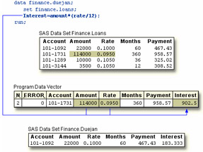

Overview
Introduction
You've learned about creating a SAS data set from raw data. However, you might want to create a new data set from an existing SAS data set. To create the new data set, you can read a data set using the DATA step. As you read the data set, you can use all the programming features of the DATA step to manipulate your data.
This chapter shows you how to use the DATA step to read an existing SAS data set. When you create your new data set, you can choose variables, select observations based on one or more conditions, and assign values conditionally. You can also assign variable attributes such as formats and labels.
| Note | You can also merge, concatenate, or interleave two or more data sets. For details, see Chapter, Combining SAS Data Sets. |
|---|
Objectives
In this chapter, you learn to
- create a new data set from an existing data set.
- use BY groups to process observations.
- read observations by observation number.
- stop processing when necessary.
- explicitly write observations to output.
- detect the last observation in a data set.
- identify differences in DATA step processing for raw data and DATA step processing for existing data sets.
Reading a Single Data Set
Suppose you want to create a small data set, Lab23.Drug1H, from the Research.CLTrials data set, which contains information about treadmill test time and relative tolerance levels.
To create the data set, you must first reference the library in which CLTrials is stored and then the library in which you want to store Drug1H. Then you write a DATA step to read your data and create a new data set.
General form, basic DATA step for reading a single data set:
DATA SAS-data-set;
SET SAS-data-set;
RUN;
where
- SAS-data-set in the DATA statement is the name (libref.filename) of the SAS data set to be created.
- SAS-data-set in the SET statement is the name (libref.filename) of the SAS data set to be read.
You write a DATA step to name the SAS data set to be created. Then, you specify the data set that will be read in the SET statement. The DATA statement below creates the permanent SAS data set Drug1H, which will be stored in a SAS data library to which the libref Lab23 has been assigned. The SET statement below reads the permanent SAS data set Research.CLTrials.
libname lab23 'c:\drug\allergy\labtests';
libname research 'c:\drug\allergy';
data lab23.drug1h;
setresearch.cltrials;
run;
The DATA step above reads all observations and variables from the existing data set into the new data set. When you submit this DATA step, the following messages appear in the log, confirming that the new data set was created:
8 data lab23.drug1h;
9 set research.cltrials;
10 run;
<
NOTE: The data set LAB23.DRUG1H has 21
observations and 8 variables.
Manipulating Data
In the previous section of this chapter, the example program created a data set that was identical to the existing data set, Research.CLTrials. But you usually don't want an exact duplicate of the existing data set. When you read a data set, you can use any of the programming features of the DATA step to manipulate your data.
For example, you can use any of the statements and data set options that you learned in previous chapters.
| To Do This | Use This Type of Statement |
|---|---|
| Subset data |
if resthr<70 then delete;
if tolerance='D';
|
| Drop unwanted variables | drop timemin timesec; |
| Create or modify a variable | TotalTime=(timemin*60)+timesec; |
| Initialize a sum variable Sum accumulated values |
retain SumSec 5400;
sumsec+totaltime;
|
| Specify a variable's length | length TestLength $ 6; |
| Execute statements conditionally |
if totaltime>800 then TestLength='Long';
else if 750<=totaltime<=800
then TestLength='Normal';
else if totaltime<750
|
| Label a variable Format a variable |
label sumsec='Cumulative Total Seconds';
format sumsec comma6.;
|
Example
The following DATA step reads the data set Research.CLTrials, selects observations and variables, and creates new variables.
data lab23.drug1h(drop=placebo uric);
set research.cltrials(drop=triglyc);
if sex='M' then delete;
if placebo='YES';
TestDate='22MAY1999'd;
retain Days 30;
days+1;
length Retest $ 5;
if cholesterol>190 then retest='YES';
else if 150<=cholesterol<=190 then retest='CHECK';
else if cholesterol<150 then retest='NO';
label retest='Perform Cholesterol Test 2?';
format enddate mmddyy10.;
run;
Where to Specify the DROP= and KEEP= Data Set Options
You've learned that you can specify the DROP= and KEEP= data set options anywhere you name a SAS data set. However, using DROP= and KEEP= when reading an existing data set requires that you decide where to specify these options. You can specify DROP= and KEEP= in either the DATA statement or the SET statement, depending on whether or not you want to process values of the variables in that DATA step:
- If you don't process certain variables and you don't want them to appear in the new data
set, then specify them in the DROP= option in the SET statement.
In the DATA step shown below, the DROP= option in the SET statement prevents the variables Triglycerides and UricAcid from being read. These variables won't appear in the Lab23.Drug1H data set.data lab23.drug1h(drop=placebo); set research.cltrials(drop=triglycerides uricacid); if placebo='YES'; run; - If you do need to process a variable in the original data set (in a subsetting IF statement,
for example), you must specify the variable in the DROP= option in the DATA statement.
Otherwise, the statement that is using the variable for processing causes an error.
This DATA step uses the variable Placebo to select observations. To drop Placebo from the new data set, the DROP= option must appear in the DATA statement.data lab23.drug1h(drop=placebo); set research.cltrials(drop=triglycerides uricacid); if placebo='YES'; run;
When used in the DATA statement, the DROP= option simply drops the variables from the new data set. However, the variables are still read from the original data set and are available within the DATA step.
- Remember, in either situation, you can use the KEEP= option instead of the DROP= option if more variables are dropped than kept.
Using BY-Group Processing
Finding the First and Last Observations in a Group
In Chapter, Creating List Reports, you learned to use a BY statement in PROC SORT to sort observations and in PROC PRINT to group observations for subtotals. You can also use the BY statement in the DATA step to group observations for processing.
data temp;
set salary;
by dept;
run;
When you use the BY statement with the SET statement,
- the data sets that are listed in the SET statement must be sorted by the values of the BY variable(s), or the data sets must have an appropriate index.
- the DATA step creates two temporary variables for each BY variable. One is named
FIRST.variable, where variable is the name of the BY variable, and the other is
named LAST.variable. Their values are either 1 or 0. FIRST.variable and
LAST.variable identify the first and last observation in each BY group.
This variable Equals FIRST.variable 1 for the first observation in a BY group
0 for any other observation in a BY groupLAST.variable 1 for the last observation in a BY group
0 for any other observation in a BY group
Example
To work with FIRST.variable and LAST.variable, let's look at a different set of data. The Company.USA data set contains payroll information for individual employees. Suppose you want to compute the annual payroll by department. Assume 2,000 work hours per year for hourly employees.
Before computing the annual payroll, you need to group observations by values of the variable Dept.
| SAS Data Set Company.USA (Partial Listing) | ||
|---|---|---|
| Dept | WageCat | WageRate |
| ADM20 | S | 3392.50 |
| ADM30 | S | 5093.75 |
| CAM10 | S | 1813.30 |
| CAM10 | S | 1572.50 |
| CAM10 | H | 13.48 |
| ADM30 | S | 2192.25 |
The following program computes the annual payroll by department. Notice that the variable name Dept has been appended to FIRST. and LAST.
proc sort data=company.usa out=work.temp;
by dept;
run;
data company.budget(keep=dept payroll);
set work.temp;
by dept;
if wagecat='S' then Yearly=wagerate*12;
else if wagecat='H' then Yearly=wagerate*2000;
if first.dept then Payroll=0;
payroll+yearly;
if last.dept;
run;
If you could look behind the scenes at the program data vector (PDV) as the Company.Budget data set is being created, you would see the following. Notice the values for FIRST.Dept and LAST.Dept.
| Selected PDV Variables | ||||
|---|---|---|---|---|
| _N_ | Dept | Payroll | FIRST.Dept | LAST.Dept |
| 1 | ADM10 | 70929.0 | 1 | 0 |
| 1 | ADm10 | 119479.2 | 0 | 0 |
| 1 | ADM10 | 173245.2 | 0 | 0 |
| 1 | ADM10 | 255516.0 | 0 | 0 |
| 1 | ADM10 | 293472.0 | 0 | 1 |
| 1 | ADM20 | 40710.0 | 1 | 0 |
| 1 | ADM20 | 68010.0 | 0 | 0 |
| 1 | ADM20 | 94980.0 | 0 | 0 |
| 1 | ADM20 | 136020.0 | 0 | 0 |
| 1 | ADM20 | 177330.0 | 0 | 1 |
| 1 | ADM30 | 61125.0 | 1 | 1 |
When you print the new data set, you can now list and sum the annual payroll by department.
proc print data=company.budget noobs;
sum payroll;
format payroll dollar12.2;
run;
| Dept Payroll | |
|---|---|
| Dept | Payroll |
| ADM10 | $293,472.00 |
| ADM20 | $177,330.00 |
| ADM30 | $173,388.00 |
| CAM10 | $130,709.60 |
| CAM20 | $156,731.20 |
| $931,630.80 | |
Finding the First and Last Observations in Subgroups
When you specify multiple BY variables,
- FIRST.variable for each variable is set to 1 at the first occurrence of a new value for the variable.
- a change in the value of a primary BY variable forces LAST.variable to equal 1 for the secondary BY variables.
Example
Suppose you now want to compute the annual payroll by job type for each manager. In your program, you specify two BY variables, Manager and JobType.
proc sort data=company.usa out=work.temp2;
by manager jobtype;
data company.budget2(keep=manager jobtype payroll);
set work.temp2;
by manager jobtype;
if wagecat='S' then Yearly=wagerate*12;
else if wagecat='H' then Yearly=wagerate*2000;
if first.jobtype then Payroll=0;
payroll+yearly;
if last.jobtype;
run;
If you could look at the PDV now, you would see the following. Notice that the values for FIRST.JobType and LAST.JobType change according to values of FIRST.Manager and LAST.Manager.
| Selected PDV Variables | |||||||
|---|---|---|---|---|---|---|---|
| _N_ | Manager | JobType | Payroll | FIRST.Manager | LAST.Manager | First.JobType | LAST.JobType |
| 1 | Coxe | 3 | 40710.0 | 1 | 0 | 1 | 1 |
| 2 | Coxe | 50 | 41040.0 | 0 | 0 | 1 | 0 |
| 3 | Coxe | 50 | 82350.0 | 0 | 0 | 0 | 1 |
| 4 | Coxe | 240 | 27300.0 | 0 | 0 | 1 | 0 |
| 5 | Coxe | 240 | 54270.0 | 0 | 1 | 0 | 1 |
| 6 | Delgado | 240 | 35520.0 | 1 | 0 | 1 | 0 |
| 7 | Delgado | 240 | 63120.0 | 0 | 0 | 0 | 1 |
| 8 | Delgado | 420 | 18870.0 | 0 | 0 | 1 | 0 |
| 9 | Delgado | 420 | 45830.0 | 0 | 0 | 0 | 1 |
| 10 | Delgado | 440 | 21759.6 | 0 | 1 | 1 | 1 |
| 11 | Overby | 1 | 82270.8 | 1 | 0 | 1 | 1 |
| 12 | Overby | 5 | 48550.2 | 0 | 0 | 1 | 1 |
| 13 | Overby | 10 | 53766.0 | 0 | 0 | 1 | 1 |
| 14 | Overby | 20 | 70929.0 | 0 | 0 | 1 | 0 |
| 15 | Overby | 20 | 108885.0 | 0 | 1 | 0 | 1 |
Now you can sum the annual payroll by job type for each manager. In the following output, the payroll for only two managers (Coxe and Delgado) is listed. Remember, neither the FIRST.variable nor the LAST.variable is stored in the new data set.
proc print data=company.budget2 noobs;;
by manager;
var jobtype;
sum payroll;
where manager in ('Coxe','Delgado');
format payroll dollar12.2;
run;
| Manager=Coxe | |
|---|---|
| JobType | Payroll |
| 3 | $40,710.00 |
| 50 | $123,390.00 |
| 240 | $81,570.00 |
| Manager | $245,670.00 |
| Manager=Delgado | |
| JobType | Payroll |
| 240 | $98,640.00 |
| 420 | $64,700.00 |
| 440 | $21,759.00 |
| Manager | $185,099.00 |
Reading Observations Using Direct Access
The POINT= Option
So far in this chapter, you've read the observations in an input data set sequentially. That is, you have accessed observations in the order in which they appear in the physical file. However, you can also access observations directly, by going straight to an observation in a SAS data set without having to process each observation that precedes it.
To access observations directly by their observation number, you use the POINT= option in the SET statement.
General form, POINT= option:
POINT=variable;
where variable
- specifies a temporary numeric variable that contains the observation number of the observation to be read.
- must be given a value before the SET statement is executed.
Example
Let's suppose you want to read only the fifth observation from a data set. In the following DATA step, the value 5 is assigned to the variable ObsNum. The POINT= option reads the value of ObsNum to determine which observation to read from the data set Company.USA.
data work.getobs5;
obsnum=5;
set company.usa(keep=manager payroll) point=obsnum;
run;
Preventing Continuous Looping with the POINT= Option
As you learned in a previous chapter, the DATA step continues to read observations until it reaches the end-of-file marker in the input data. However, because the POINT= option reads only specified observations, SAS cannot read an end-of-file indicator as it would if the file were being read sequentially. So submitting the following program would cause continuous looping:
data work.getobs5(drop=obsnum);
obsnum=5;
set company.usa(keep=manager payroll) point=obsnum;
run;
Because there is no end-of-file condition when you use direct access to read data, you must take either or both of the following precautions:
- Use a STOP statement to prevent continuous looping. The STOP statement causes SAS to stop processing the current DATA step immediately and to resume processing statements after the end of the current DATA step.
- Use programming logic that checks for an invalid value of the POINT= variable. If SAS reads an invalid value for the POINT= variable, it sets the automatic variable _ERROR_ to 1. You can use this information to check for conditions that cause continuous processing.
General form, STOP statement:
STOP;
So if you add a STOP statement, your program no longer loops continuously.
data work.getobs5(drop=obsnum);
obsnum=5;
set company.usa(keep=manager payroll) point=obsnum;
stop;
run;
But your program doesn't write any observations to output, either. Remember from Chapter, Understanding DATA Step Processing, that the DATA step writes observations to output at the end of the DATA step. However, in this program, the STOP statement immediately stops processing before the end of the DATA step.
The following section shows you how to write the observation to output before processing stops.
Writing Observations Explicitly
To override the default way in which the DATA step writes observations to output, you can use an OUTPUT statement in the DATA step. Placing an explicit OUTPUT statement in a DATA step overrides the automatic output, so that observations are added to a data set only when the explicit OUTPUT statement is executed.
General form, OUTPUT statement:
OUTPUT <SAS-data-set(s)>;
where SAS-data-set(s) names the data set(s) to which the observation is written. All data set names that are specified in the OUTPUT statement must also appear in the DATA statement.
Using an OUTPUT statement without a following data set name causes the current observation to be written to all data sets that are named in the DATA statement.
With an OUTPUT statement, your program now writes a single observation to output- observation 5.
data work.getobs5(drop=obsnum);
obsnum=5;
set company.usa(keep=manager payroll) point=obsnum;
output;
stop;
run;
proc print data=work.getobs5 noobs;
run;
| Manager | Payroll |
|---|---|
| Delgado | 45830 |
Suppose your DATA statement contains two data set names, and you include an OUTPUT statement that only references one of the data sets. The DATA step will create both data sets, but only the data set that is named in the OUTPUT statement will contain output. For example, the program below creates two temporary data sets, Empty and Full. The result of this DATA step is that the data set Empty is created but contains no observations, and the data set Full contains all of the observations from Company.Usa.
data empty full;
set company.use;
output full;
run;
More Complex Ways of Using Direct Access
To convey concepts clearly, the examples in this section have been as simple as possible. However, most uses of the POINT= option are more complex. For example, POINT= is commonly used in combining data sets, not simply in reading a single data set.
You can see more complex examples of using POINT= in Chapter, Generating Data with DO Loops.
Detecting the End of a Data Set
The END= Option
Instead of reading specific observations, you might want to determine when the last observation in an input data set has been read, so that you can perform specific processing. For example, you might want to write to output only an observation that contains totals for variables in all observations in the data set.
To create a temporary numeric variable whose value is used to detect the last observation, you can use the END= option in the SET statement.
General form, END= option:
END=variable
where variable creates and names a temporary variable that contains an end-of-file marker. The variable, which is initialized to 0, is set to 1 when the SET statement reads the last observation of the data set.
This variable is not added to the data set.
| Warning | Do not specify END= with POINT=. POINT= reads only a specific observation, so the last observation in the data set is not encountered. |
|---|
Examples
Suppose you want to sum the number of seconds for treadmill stress tests. If you submit the following program, you produce a new data set that contains cumulative totals for each of the values of TotalTime.
data work.addtoend(drop=timemin timesec);
set clinic.stress2(keep=timemin timesec);
TotalMin+timemin;
TotalSec+timesec;
TotalTime=totalmin*60+timesec;
run;
proc print data=work.addtoend noobs;
run;
| TotalMin | TotalSec | TotalTime |
|---|---|---|
| 12 | 38 | 758 |
| 22 | 43 | 1325 |
| 33 | 56 | 1993 |
| 42 | 98 | 2562 |
| 53 | 144 | 3226 |
| 65 | 170 | 3926 |
| 80 | 211 | 4841 |
| 93 | 224 | 5593 |
| 103 | 246 | 6202 |
| 119 | 295 | 7189 |
| 134 | 297 | 8042 |
| 146 | 308 | 8771 |
| 160 | 317 | 9609 |
| 171 | 343 | 10286 |
| 185 | 370 | 11127 |
| 198 | 389 | 11899 |
| 214 | 396 | 12847 |
| 231 | 431 | 13895 |
| 246 | 472 | 14801 |
| 260 | 529 | 15657 |
| 272 | 539 | 16330 |
But what if you want only the final total (the last observation) in the new data set? The following program uses the END= variable last to select only the last observation of the data set. You specify END= in the SET statement and last wherever you need it in processing (here, in the subsetting IF statement).
data work.addtoend(drop=timemin timesec);
set clinic.stress2(keep=timemin timesec)end=last;
TotalMin+timemin;
TotalSec+timesec;
TotalTime=totalmin*60+timesec;
if last;
run;
proc print data=work.addtoend noobs;
run;
Now the new data set has one observation:
| TotalMin | TotalSec | TotalTime |
|---|---|---|
| 272 | 539 | 16330 |
Understanding How Data Sets Are Read
In a previous chapter, you learned about the compilation and execution phases of the DATA step as they pertain to reading raw data. DATA step processing for reading existing SAS data sets is very similar. The main difference is that while reading an existing data set with the SET statement, SAS retains the values of the variables from one observation to the next.
Let's briefly look at the compilation and execution phases of DATA steps that use a SET statement. In this example, the DATA step reads the data set Finance.Loans, creates the variable Interest, and creates the new data set Finance.DueJan.
data finance.duejan;
set finance.loans;
Interest=amount*(rate/12);
run;
| SAS Data Set Finance.Loans | ||||
|---|---|---|---|---|
| Account | Amount | Rate | Months | Payment |
| 101-1092 | 22000 | 0.100 | 60 | 467.43 |
| 101-1731 | 114000 | 0.095 | 360 | 958.57 |
| 101-1289 | 10000 | 0.105 | 36 | 325.02 |
| 101-3144 | 3500 | 0.105 | 12 | 308.52 |
Compilation Phase
The compilation phase includes the following steps:
- The program data vector is created and contains the automatic variables _N_ and
_ERROR_.
- SAS also scans each statement in the DATA step, looking for syntax errors.
- When the SET statement is compiled, a slot is added to the program data vector for each
variable in the input data set. The input data set supplies the variable names, as well as
attributes such as type and length.
- Any variables that are created in the DATA step are also added to the program data
vector. The attributes of each of these variables are determined by the expression in the
statement.

- At the bottom of the DATA step, the compilation phase is complete, and the descriptor portion of the new SAS data set is created. There are no observations because the DATA step has not yet executed.
When the compilation phase is complete, the execution phase begins.
Execution Phase
The execution phase includes the following steps:
- The DATA step executes once for each observation in the input data set. For example, this DATA step will execute four times because there are four observations in the input data set Finance.Loans.
- At the beginning of the execution phase, the value of _N_ is 1. Because there are no data
errors, the value of _ERROR_ is 0. The remaining variables are initialized to missing.
Missing numeric values are represented by a period, and missing character values are
represented by a blank.
- The SET statement reads the first observation from the input data set and writes the
values to the program data vector.
- Then, the assignment statement executes to compute the value for Interest.
- At the end of the first iteration of the DATA step, the values in the program data vector
are written to the new data set as the first observation.

- The value of _N_ is set to 2, and control returns to the top of the DATA step. Remember,
the automatic variable _N_ keeps track of how many times the DATA step has begun to
execute.
- SAS retains the values of variables that were read from a SAS data set with the SET
statement, or that were created by a Sum statement. All other variable values, such as
the values of the variable Interest, are set to missing.
Note When SAS reads raw data, the situation is different. In that case, SAS sets the value of each variable in the DATA step to missing at the beginning of each iteration, with these exceptions: - variables named in a RETAIN statement.
- variables created in a Sum statement.
- data elements in a _TEMPORARY_ array.
- any variables created by using options in the FILE or INFILE statements.
- automatic variables.
- At the beginning of the second iteration, the value of _N_ is set to 2, and the value of
_ERROR_ is re-set to 0. Remember, the automatic variable _N_ keeps track of how
many times the DATA step has begun to execute.
- As the SET statement executes, the values from the second observation are written to
the program data vector.
- The assignment statement executes again to compute the value for Interest for the
second observation.
 - At the bottom of the DATA step, the values in the program data vector are written to the
data set as the second observation.
- The value of _N_ is set to 3, and control returns to the top of the DATA step. SAS
retains the values of variables that were read from a SAS data set with the SET
statement, or that were created by a Sum statement. All other variable values, such as
the values of the variable Interest, are set to missing.
This process continues until all of the observations are read.
Additional Features
The DATA step provides many other programming features for manipulating data sets. For example, you can
- use IF-THEN/ELSE logic with DO groups and DO loops to control processing that is based on one or more conditions.
- specify additional data set options.
- process variables in arrays.
- use SAS functions.
You can also combine SAS data sets in several ways, including match merging, interleaving, oneto- one merging, and updating. You will learn how to do these tasks in later chapters.
Summary
Text Summary
Setting Up
Before you can create a new data set, you must assign a libref to the SAS data library that will store the data set.
Reading a Single Data Set
After you have referenced the library in which your data set is stored, you can write a DATA step to name the SAS data set to be created. You then specify the data set to be read in the SET statement.
Selecting Variables
You can select the variables that you want to drop or keep by using the DROP= and KEEP= data set options in parentheses after a SAS data set name. For convenience, use DROP= if more variables are kept than dropped.
BY-Group Processing
Use the BY statement in the DATA step to group observations for processing. When you use the BY statement with the SET statement, the DATA step automatically creates two temporary variables, FIRST. and LAST. When you specify multiple BY variables, a change in the value of a primary BY variable forces LAST.variable to equal 1 for the secondary BY variables.
Reading Observations Using Direct Access
In addition to reading input data sequentially, you can access observations directly by using the POINT= option to go directly to a data set observation. There is no end-of-file condition when you use direct access, so include an explicit OUTPUT statement and then the STOP statement to prevent continuous looping.
Detecting the End of a Data Set
To determine when the last observation in an input data set has been read, use the END= option in the SET statement. The specified variable is initialized to 0, then set to 1 when the SET statement reads the last observation of the data set.
Points to Remember
- When you perform BY-group processing, the data sets that are listed in the SET statement must either be sorted by the values of the BY variable(s), or they must have an appropriate index.
- When using direct access to read data, you must prevent continuous looping. Add a STOP statement to the DATA step, or use programming logic that checks for an invalid value of the POINT= variable.
- Do not specify the END= option with the POINT= option in a SET statement.